Danzas de la Virgen del Carmen
Qhapaq Chuncho
Los Qhapaq Chuncho son guerreros de la selva amazónica. Sus trajes coloridos están adornados con plumas multicolores, espejos y cintas. Llevan coronas de plumas y chalecos ricamente decorados, y sus movimientos imitan a los guerreros selváticos.
Historia: Esta danza simboliza la unión de los pueblos de la selva con los habitantes de los Andes. Los Chuncho, considerados salvajes antes de ser conquistados por los Incas, se integraron en las festividades religiosas andinas. Según la tradición, los Chuncho fueron guardianes de la Virgen del Carmen y su presencia es esencial durante las festividades para evitar malos augurios. Su participación también está vinculada a relatos sobre la llegada de la Virgen al pueblo y su papel en las guerrillas representadas durante la celebración.
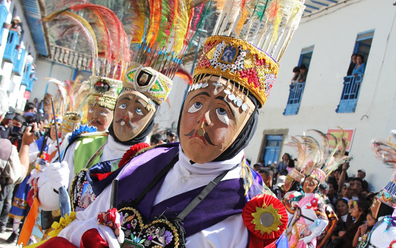Crédito de la imagen: Autor desconocido
Qhapaq Qolla
Los Qhapaq Qolla visten trajes tradicionales del altiplano, incluyendo ponchos y sombreros tejidos, acompañados de máscaras con rasgos exagerados. Los danzantes también utilizan llamas decoradas como parte de su vestuario.
Historia: Esta danza representa a los comerciantes del altiplano que llegaban a Paucartambo para intercambiar productos. Los Qolla eran esenciales para la economía local, transportando bienes a través de largas distancias. Su participación en la festividad de Quyllur Rit'y y en la guerrilla durante las fiestas otorgan a esta danza una gran importancia ritual. Además, los Qhapaq Qolla, junto con los Capac Negro, tienen cantos especiales dedicados a la Virgen, acompañándola de cerca en el templo y en las procesiones.
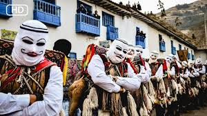Crédito de la imagen: Autor desconocido
Capac Negro
Los Capac Negro llevan máscaras negras y trajes vistosos que representan a los esclavos africanos. Sus atuendos incluyen sombreros decorados y cascabeles en los tobillos.
Historia: La danza rememora a los esclavos africanos traídos durante la época colonial para trabajar en minas y plantaciones. A través de movimientos exagerados y actuaciones humorísticas, la danza critica la opresión y celebra la resistencia de los esclavos ante las injusticias. Los danzantes forman parte de una comparsa liderada por un caporal o rey negro, y su participación es un recordatorio de la historia de esclavitud y lucha por la libertad.
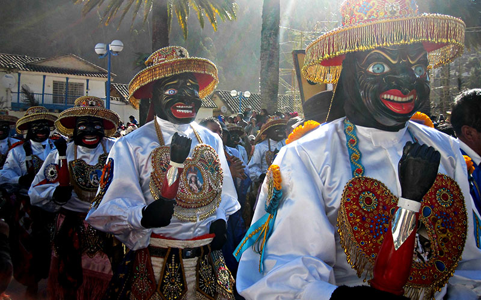Crédito de la imagen: Autor desconocido
Ch'unchachas
Las Ch'unchachas son mujeres guerreras de la selva, con trajes coloridos adornados con plumas y cintas. Sus atuendos incluyen faldas largas y blusas decoradas con motivos florales.
Historia: Originaria del valle de Q'osñipata, esta danza destaca la fuerza y valentía de las mujeres en la selva. Las Ch'unchachas son vistas como protectoras de la naturaleza y de sus comunidades, participando activamente en la defensa de su territorio y sus costumbres. La danza es una celebración de la importancia de las mujeres en la cultura local, y su presencia es vital para la festividad.
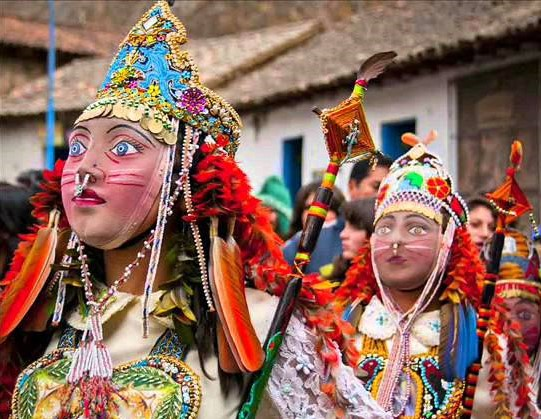Crédito de la imagen: Autor desconocido
Saqra
Los Saqra son diablos traviesos con máscaras grotescas y trajes rojos, decorados con cuernos y colas. La comparsa incluye personajes como Lucifer, caporal del grupo, y Luzbel, su acompañante.
Historia: Los Saqra representan fuerzas malignas que intentan interrumpir la procesión de la Virgen del Carmen. Aunque son traviesos, no son completamente malvados. Su participación en la guerrilla y su papel en llevar a los muertos al infierno durante las celebraciones les otorgan una importancia significativa en la narrativa ritual. La danza refleja la lucha entre el bien y el mal, y la necesidad de equilibrio en el universo.
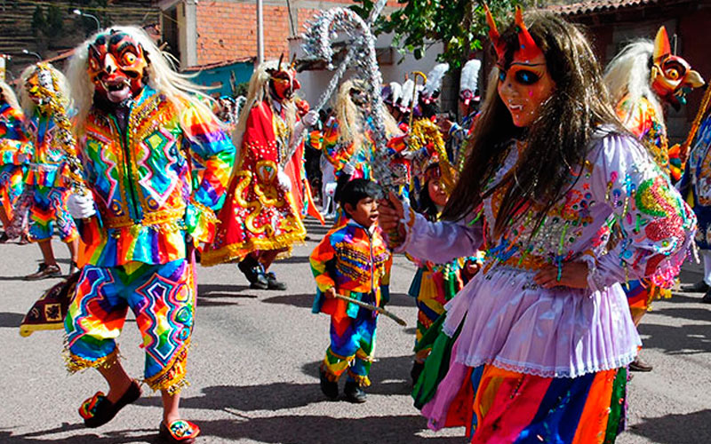Crédito de la imagen: Autor desconocido
Qoyacha
Los Qoyacha son jóvenes que visten trajes elegantes y coloridos, con faldas largas para las mujeres y pantalones decorados para los hombres.
Historia: La danza simboliza la fertilidad y la alegría de la juventud. Originalmente mal vista, fue retomada y revitalizada en los años 80, ganando prestigio y perfeccionándose en su coreografía y vestuario. Actualmente, la comparsa exige un alto nivel de disciplina y compromiso, especialmente en términos de moral y presentación, y ha participado en numerosos eventos, ganando reconocimiento.

Crédito de la imagen: Autor desconocido
Contradanza
La Contradanza presenta trajes europeos antiguos, incluyendo chaquetas y pantalones de estilo colonial, y máscaras que representan a los colonizadores.
Historia: Esta danza burla a las autoridades coloniales y sus costumbres. A través de escenas cómicas y gestos exagerados, los danzantes critican la opresión y el abuso de poder durante la colonia. La Contradanza es una forma de resistencia cultural que preserva la identidad andina frente a la influencia extranjera, satirizando las imposiciones coloniales y celebrando la resistencia de los pueblos indígenas.
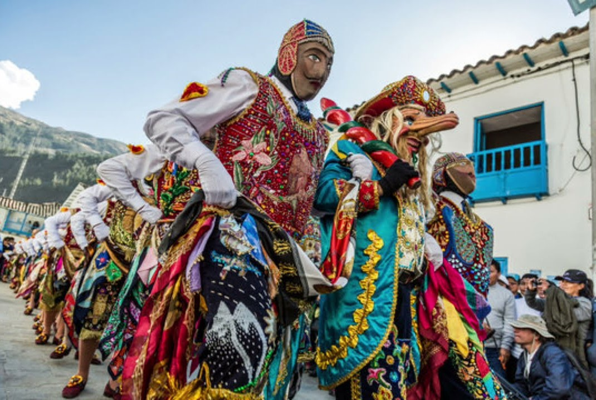Crédito de la imagen: Autor desconocido
Waca Waca
Los danzantes de Waca Waca llevan disfraces de toros y toreros, recreando una corrida de toros. Sus trajes incluyen capas rojas y sombreros típicos de toreros.
Historia: La danza es una parodia de las corridas de toros españolas, criticando la brutalidad del evento. A través de movimientos exagerados y situaciones cómicas, se cuestiona la violencia y se promueve una reflexión sobre el respeto a los animales. La Waca Waca destaca cómo las tradiciones españolas fueron adoptadas y transformadas en críticas sociales por las comunidades andinas, subrayando la capacidad de adaptación y resistencia cultural.
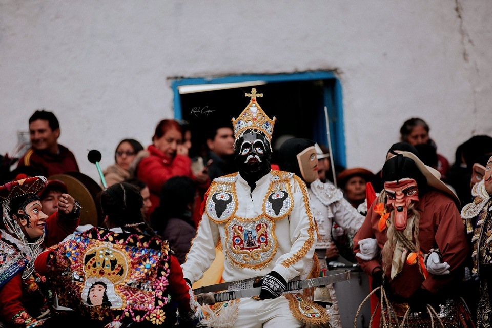Crédito de la imagen: Autor desconocido
Doctorcito o Siklla
Los danzantes visten atuendos médicos y llevan herramientas de trabajo como estetoscopios y maletines. Sus trajes son elegantes y a menudo incluyen gafas y sombreros.
Historia: Esta danza satiriza a los profesionales y burócratas que abusaban de su poder, especialmente en el ámbito de la salud y la justicia. A través de movimientos humorísticos y exageraciones, los danzantes denuncian la corrupción y la falta de ética en estas profesiones. La danza es una crítica social que resalta la importancia de la integridad y la justicia en la sociedad, recordando a la comunidad la necesidad de mantener altos estándares morales.
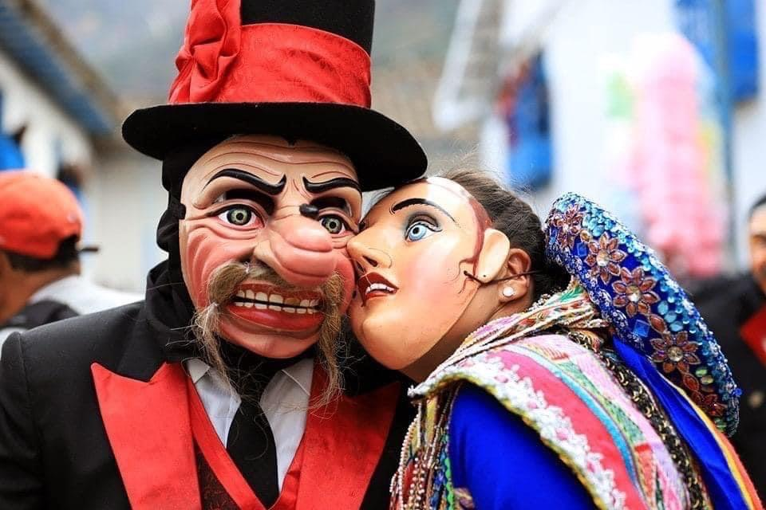Crédito de la imagen: Autor desconocido
Majeño
Los Majeños llevan ponchos y sombreros característicos de los arrieros de Majes. Sus trajes están decorados con cintas y bordados que representan su origen.
Historia: La danza evoca a los comerciantes que traían vino y aguardiente desde Majes, Arequipa. Los Majeños eran conocidos por su habilidad para transportar estos productos a través de rutas difíciles. Su danza celebra su arduo trabajo y su contribución al comercio y la economía local, destacando la importancia de los arrieros en la conexión de diferentes regiones del Perú.
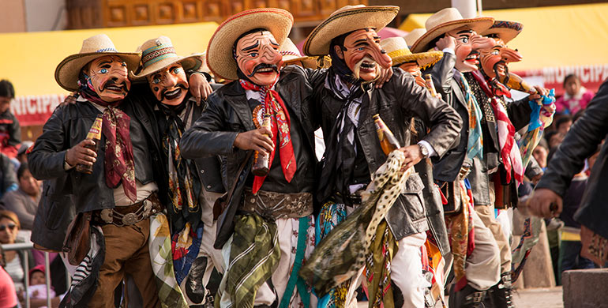Crédito de la imagen: Autor desconocido
Negrillo
Los danzantes de Negrillo visten trajes simples y llevan máscaras que representan a los esclavos africanos. Sus atuendos reflejan la vestimenta humilde de los trabajadores esclavizados.
Historia: La danza rememora la época de la esclavitud, representando a los afrodescendientes que fueron forzados a trabajar en condiciones inhumanas. A través de la danza, se honra su resistencia y se mantiene viva la memoria de su sufrimiento y lucha por la libertad. La danza de Negrillo es un recordatorio de la historia de opresión y la importancia de la memoria histórica en la construcción de una sociedad más justa.
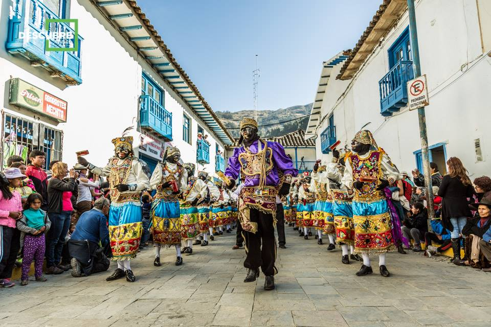Crédito de la imagen: Autor desconocido
Auqa Chileno
Los danzantes visten trajes militares y llevan armas simuladas. Sus atuendos incluyen cascos y uniformes que imitan a los soldados chilenos.
Historia: La danza recuerda la Guerra del Pacífico y la invasión chilena. Los danzantes recrean escenas de batalla y resistencia, destacando la valentía de los soldados peruanos y la lucha por la soberanía. La danza es una forma de honrar a los caídos y mantener viva la historia de la defensa del territorio nacional, resaltando la importancia del patriotismo y la resistencia ante la adversidad.
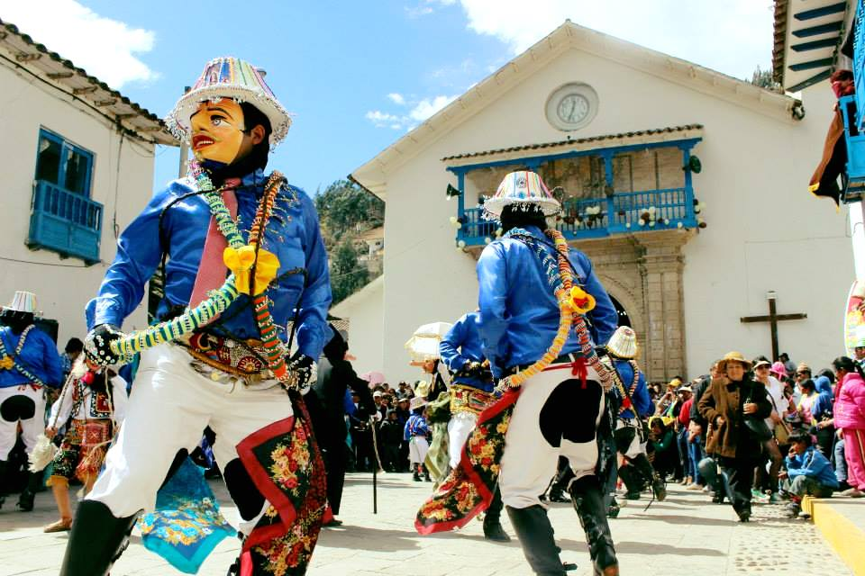Crédito de la imagen: Autor desconocido
Panadero
Los Panaderos llevan atuendos de trabajo que incluyen delantales y gorros de cocina. Utilizan herramientas como palas y cestos para simular la elaboración del pan.
Historia: La danza representa la importancia de la panadería en la vida cotidiana de Paucartambo. Los danzantes recrean el proceso de hacer pan en hornos de leña, destacando la labor artesanal y el papel fundamental de los panaderos en la comunidad. La danza celebra la tradición culinaria y la dedicación de quienes trabajan para alimentar a la población, subrayando la conexión entre el trabajo artesanal y la cultura local.
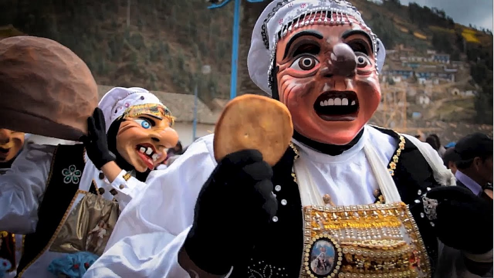Crédito de la imagen: Autor desconocido
K'achampa
Los K'achampa llevan vestimenta tradicional incaica, incluyendo faldas y ponchos decorados con símbolos guerreros. Utilizan armas simuladas como lanzas y escudos.
Historia: Esta danza simboliza el entrenamiento de jóvenes guerreros incas. A través de movimientos marciales y coreografías, se muestra la disciplina y el valor necesarios para proteger el imperio. La K'achampa es una celebración de la herencia militar y cultural de los incas, destacando la importancia de la preparación y el coraje en la defensa de la comunidad.
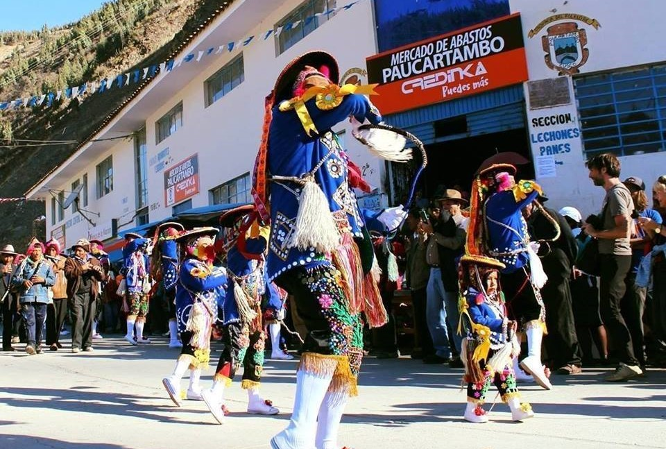Crédito de la imagen: Autor desconocido
Chucchu
Los Chucchu visten trajes desgastados y llevan elementos que representan síntomas de malaria, como vendas y rostros pálidos.
Historia: La danza personifica a los trabajadores que contraían malaria mientras trabajaban en la selva. A través de movimientos lentos y doloridos, se representa su sufrimiento y las duras condiciones de vida. La danza es un homenaje a su sacrificio y resistencia, destacando la lucha contra las adversidades y la importancia de la salud en el trabajo.
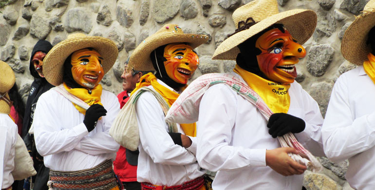Crédito de la imagen: Autor desconocido
Danzaq
Los Danzaq llevan trajes coloridos y destacan por sus habilidades acrobáticas. La danza es conocida por su ritmo y destreza física.
Historia: Los Danzaq son conocidos por su agilidad y habilidades acrobáticas. La danza destaca la destreza física y la gracia de los danzantes, siendo una de las más espectaculares y esperadas en las festividades de Paucartambo. Representa la figura del danzante paucartambino, resaltando la tradición y el arte de la danza en la región.

Crédito de la imagen: Autor desconocido
Paucartampus
Los danzantes de Paucartampus visten atuendos campesinos y utilizan herramientas de trabajo que muestran actividades agrícolas.
Historia: Esta danza muestra la vida agrícola de Paucartambo, destacando las labores del campo y la relación con la tierra. Los danzantes representan diferentes actividades agrícolas, desde la siembra hasta la cosecha, celebrando la conexión entre la comunidad y su entorno natural. Es una manifestación de la importancia de la agricultura en la vida y cultura locales.
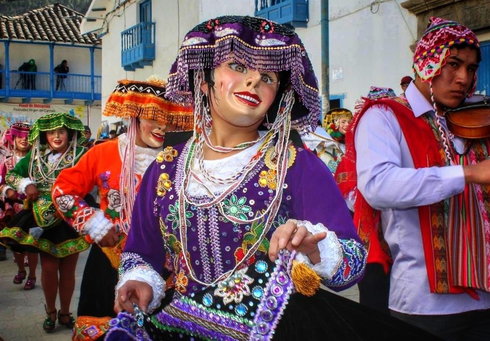Crédito de la imagen: Autor desconocido
Misti Qanchi
Los danzantes de Misti Qanchi llevan trajes rituales y ofrendas que simbolizan los rituales en honor a la Pachamama.
Historia: Esta danza es una ofrenda a la madre tierra, Pachamama, agradeciendo su fertilidad y provisión. A través de movimientos rituales y ofrendas simbólicas, se busca armonizar y asegurar la bendición de la tierra para futuras cosechas, destacando la relación sagrada entre la comunidad y la naturaleza.
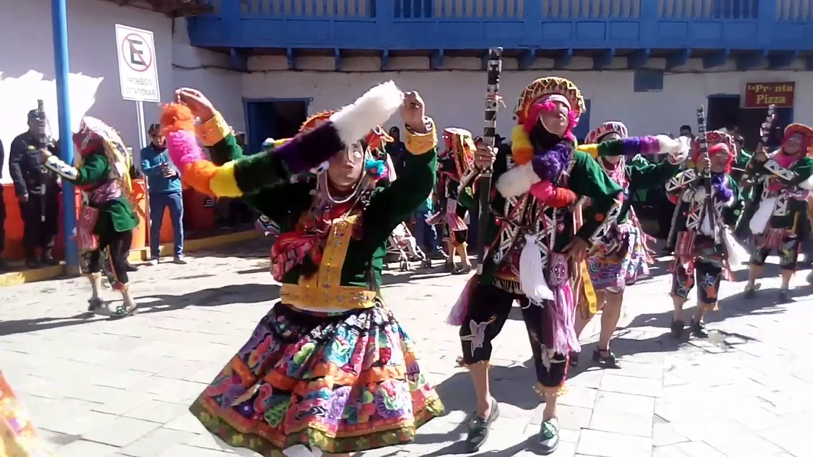Crédito de la imagen: Autor desconocido
Maqt'a
El Maqt'a lleva vestimenta simple y realiza gestos burlones que representan a un joven campesino travieso.
Historia: El Maqt'a es un personaje pícaro y libre, que se burla de las demás danzas y autoridades. Representa al joven campesino que no sigue las normas y se rebela contra las figuras de autoridad, celebrando la libertad y resistencia juvenil, y destacando la importancia de la rebeldía en la lucha por la justicia. Su participación individual en la festividad resalta la autonomía y el espíritu independiente de la juventud.

Crédito de la imagen: Autor desconocido